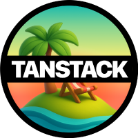

Communicate early.
Flag fast.
Translate for clients, escalate before you're stuck, and show the product—not the code.



Translate, don't educate
Clients need to know when their feature ships, not how tRPC works. Outcome-focused communication.
Don't say
"I'm refactoring the tRPC router to add Zod validation on the input schema."
Say instead
"Form validation is done. Users will see clear errors when they submit invalid data."
Status updates formula
Executives have ~30 seconds to review. Keep it concise. Visuals over walls of text.
1. What's done — completed since last update
2. What's in progress — current work
3. What's blocked — issues preventing progress
4. What I need from you — decisions, input, or approvals
Never leave them guessing
Remind clients what you need. Blockers without "what I need from you" create silence and drift.
Delivering bad news
Framework: Acknowledge → Explain impact → Propose path forward. Never report a problem without a recommendation.
Acknowledge
Recognize how the news affects them. Put yourself in their position.
Explain impact
Be direct. What happened, why, and what it means for the timeline or scope.
Propose path forward
Focus most of the conversation on the solution, not the problem.
Rule
Don't just dump the problem. Come with at least one concrete recommendation. That's where you regain trust.
Asking questions well
Vague complaints don't get answers. Specific questions do.
Bad
"The requirements are unclear."
Puts burden on them to guess what you need.
Good
"I want to confirm: when you say X, do you mean A or B? I'm leaning toward A because [reason]."
Gives them an easy yes/no.
Live exercise
Show 2 bad status updates on screen. Rewrite them together as a group.
Demo skills
Structure: Context → What you built → Show it working → What's next.
Rule
Show the product, not the code. Clients don't care about your router.
// Quick practice
Each person gives a 60-second demo of one feature to a partner. Partner gives one piece of feedback.
The 30-minute rule
Stuck with no forward progress for 30 minutes? Escalate. This isn't failure—it's professional judgment.
In consulting and small teams
Silent struggling burns the project. Your client or lead can't help if they don't know you're stuck.
Red flags to recognize
Know when to escalate. These signal you're in risky territory.
Technical
Vague requirements, scope creep disguised as "small changes," building something you can't explain.
Process
Client unresponsive on blocking questions, priorities shifting with no updated timeline.
Personal
You're guessing instead of knowing, avoiding the hard part of the ticket.
How to flag well
Use this template: "I've identified [issue]. Impact is [X]. I recommend [Y]. I need [Z] to proceed."
I've identified — the issue in one sentence
Impact is — what happens if we don't fix it
I recommend — your proposed solution
I need from you — decision, input, or approval to proceed
// Quick exercise
Show 2 scenarios on screen. Each person writes an escalation message in 2 minutes. Share and critique 1–2 as a group.
Engineering judgment, fast
Build vs library. "Good enough" vs perfect. Push back vs just build it.
The key question
"What's the cost of being wrong?" Low cost → move fast. High cost → slow down, ask, validate.
Satisficing
Herbert Simon: pursuing the optimal often costs more than the marginal gain. Barry Schwartz: maximizers report lower satisfaction and more regret.
Example
Client asks for real-time updates. WebSockets vs poll every 5 seconds? How do you decide, and how do you communicate the tradeoff?
The two things to remember
Workflow
Requirement → Schema → Backend → Frontend → Ship
Mindset
Communicate early, flag fast, own your work
30/60/90-day growth prompt: "Where do you want to be in 30 days? What would make you confident?"
Keep building
T3 Stack
create.t3.gg — docs, tutorials, community
Prisma
prisma.io/docs — schema, queries, migrations
tRPC
trpc.io/docs — routers, middleware, errors
TanStack Query
tanstack.com/query — caching, mutations
Tailwind CSS
tailwindcss.com/docs — utilities, responsive